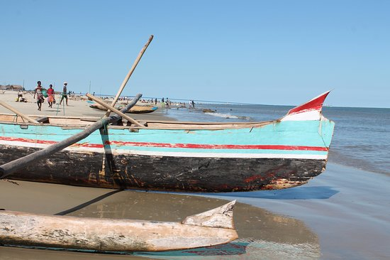

LES VEZO
Les Vezo sont surnommés les nomades ou les « nomades de la mer ». Établis le long du littoral de l'Atsimo-Andrefana, ils maîtrisent l'art de la navigation à bord de leurs pirogues à balancier traditionnelles. Leur mode de vie et leur économie dépendent entièrement des ressources halieutiques de l'océan.